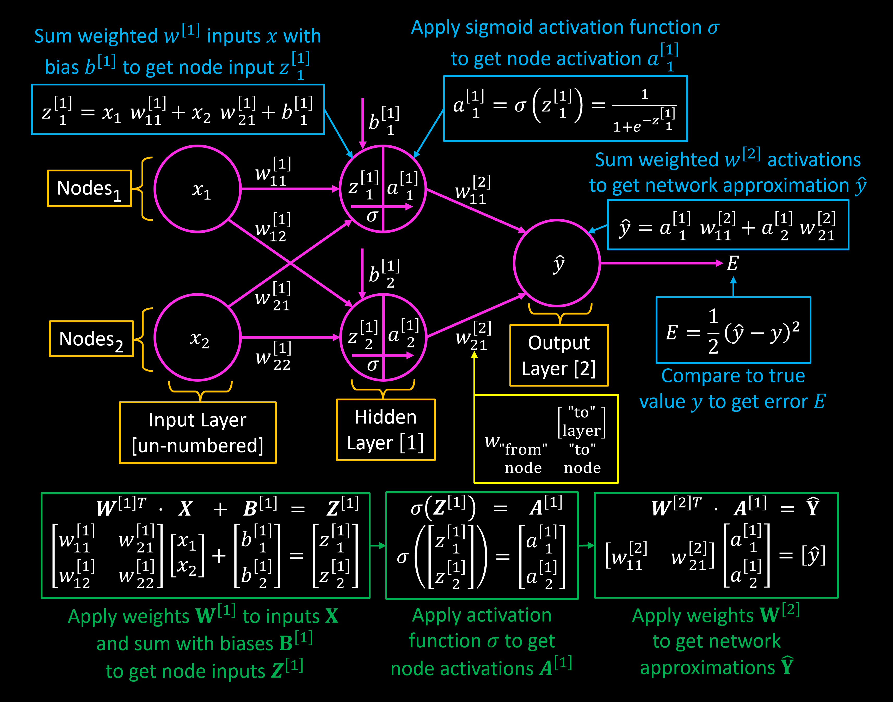
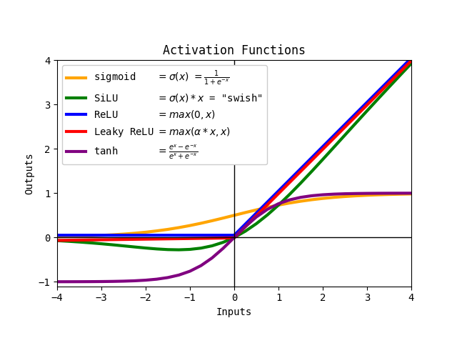

Neural Networks#
Tiny Neural Network#
Behold, I created a tiny neural network, showing nodes, activation functions, matrices, and equations.

layer values
\(X=\) vector of inputs
\(W^{[1]}=\) matrix of weights of hidden layer 1
\(B^{[1]}=\) vector of biases of hidden layer 1
\(Z^{[1]}=\) vector of inputs to hidden layer 1, with weights and biases applied
\(A^{[1]}=\) vector of outputs from hidden layer 1, with activation function applied
node values
\(x_2=\) input from node 2
\(w^{[1]}_{23}=\) weight from node 2 to node 3 of layer 1
\(b^{[1]}_2=\) bias of node 2 of hidden layer 1
\(z^{[1]}_2=\) input to node 2 of hidden layer 1, created by summing weighted inputs
\(a^{[1]}_2=\) output from node 2 of layer 1
not pictured
\(m^{[1]},\cdots,m^{[r]}=\) number of neurons in \(1^{st}\) through \(r^{th}\) (final) hidden layers
\(g^{[1]},\cdots,g^{[r]}=\) activation functions of \(1^{st}\) through \(r^{th}\) (final) hidden layers
note
you transpose the weights (\(W^{[1]T}\) or \(W^{[2]T}\)) before multiplying by inputs (\(X\) or \(A^{[1]}\)) as inner dimensions must match for matrix multiplication
Backpropagation#
backpropagation is the process by which you determine how to update weights to minimize loss (shown here as the cost function J)
you take partial derivatives of each step in the network, then combine them with the chain rule to get the derivative of the loss with respect to each individual weight
then you multiply the weight by that gradient and the learning rate so that the next training batch will hopefully have reduced loss

Activation Functions#
Functions that determine the output of a node from the summed, weighted,biased inputs. Different layers can have different activation functions.
Properties#
Nonlinear - if the activation function is
nonlinear, a two-layer neural network can be a universal function approximator. Theidentityactivation function (basically meaning no activation function at all) will severely limit what your network can approximate, showing why we use activation functions.Range - if the activation function’s output range is finite (like how a
sigmoidfunction ranges from(0,1)or atanhfunction ranges from(-1,1)), gradient-based training methods tend to be more stable. If not (like howReLUcan increase infinitely with the input), training tends to be more efficient as patterns in the data can affect more weights and may help avoid the vanishing gradients problem (though you should use smaller learning rates in this case).Continouously Differentiable - continuously-differentiable activation functions have easier times with gradient-based optimization methods. Some non-continuously-differentiable activation functions which suddenly change directions (like
ReLU) may have issues with gradient-based optimization, but can still be used.
Examples#
There are a LOT of different activation functions - here are a few (see this table for more)
linear- \(y=mx+b\) - basically the output is just a line relative to the input, does not allow the network to be a universal function approximator. All of the other functions shown arenonlinearsigmoid("logistic") - \(\sigma\) - squashes the real number into a(0,1)range.ReLU- Rectified Linear Unit - provides the same benefits as sigmoid but with less computational effort. One of the most popular activation functions with many variantsLeaky ReLU- allows a small positive gradient “\(\alpha\)” (usually0.01-0.3) when the unit is inactive to counteract the vanishing gradient problemPReLU-Parametric Rectified Linear Unit- makes “\(\alpha\)” a learnable parameter along with other parameters like weightsGELU-Gaussian Error Linear Unit- smooth apporoximation ofReLUwith a “bump”. default activation for many transformer models such as BERTSiLU("swish") -Sigmoid Linear Unit- another smooth approximation with a bump, uses thesigmoidfunction, cheaper to calculate thanGELUtanh-Hyperbolic Tangent- nonlinear, zero-centered, squashes the real number into a(-1,1)range, faster convergence thansinusoidsinusoid- a periodic activation function.sinis usually used as any periodic function is decomposable into sinusoids by Fourier transform. increasing-order derivatives never go to zero. Periodicity may make convergence difficult.

Derivatives#
Note that if you’re using PINN’s or something with autodifferentiation, any non-periodic activation functions will decrease in magnitude with each derivative